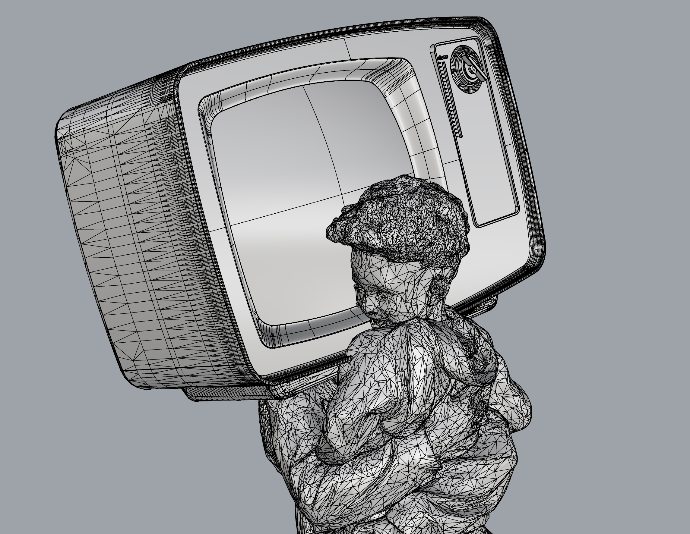
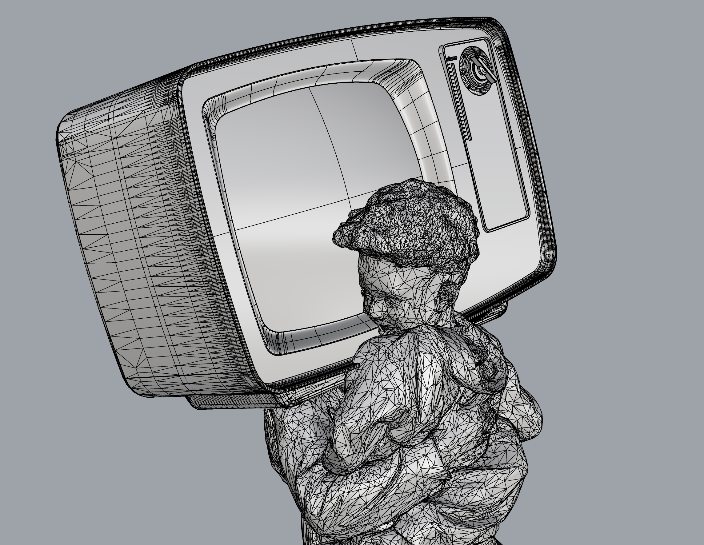

Getting Meshy! and Lamps!

Summary
Lots of hybrid snails (meshing meshes!)
I also started designing my lamp for next week!
Struggles
My first attempt was a tv on the head of an adult holding up and kissing a young child. When MeshBooleanUnion-ing, it crashed Rhino several times. I left it for my vicious snail. My first vicious snail couldn't pass, so I made a second cat snail that did.
Lamp Struggles: I feel good!
Wins
I ended up making lots of snails - 3! Also, I appreciate learning how to assess and fix a mesh-- the fixing was interesting to think about and Google solutions. I might make this snail as holiday gifts.
Lamp Wins: I think the lamp I've imagined will be whimsical and engaging to design
 
